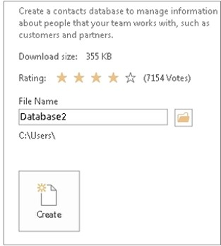
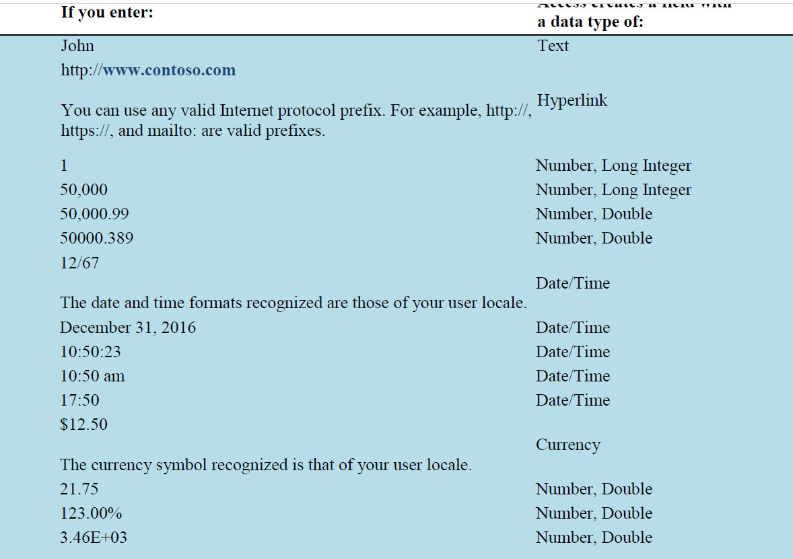
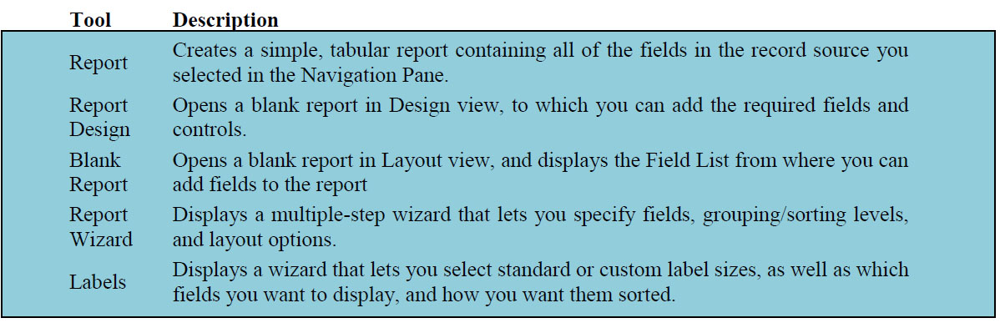

Basic tasks for an Access desktop database
Access desktop databases can help you store and track just about any kind of information, such as inventory, contacts, or business processes.
Let‘s take a walk through the paths you can take to create an Access desktop database, add data to it, and then learn about next steps towards customizing and using your new database.
In this article
Choose a template
Create a database from scratch
Add a table
Copy and paste data
Import or link to data
Organize data with the Table Analyzer
Next steps
Choose a template
Access templates have built-in tables, queries, forms, and reports that are ready to use. A choice of templates is the first thing you‘ll notice when you start Access, and you can search online for
 1. In Access click File > New.
1. In Access click File > New.
2. Select a desktop database template and enter a name for your database under File Name. (If you don‟t see a template that would work for you, use the Search online templatesbox.)
3. You can either use the default location that Access shows below the File Name box or click the folder icon to pick one.
4. Click Create.

Depending on the template, you might need to do any of the following to get started:
If Access displays a Login dialog box with an empty list of users:
a. Click New User.
b. Fill in the User Details form.
c. Click Save & Close.
d. Select the user name you just entered, and then click Login.
If Access displays a Security Warning message in the message bar, and you trust the source of the template, click Enable Content. If the database requires a login, log in again.
Create a database from scratch
If none of the templates fit your needs, you might start with a blank desktop database.
1. From Access, click New > Blank desktop database.
2. Type a name for your database in the File Name box.
3. You can either use the default location that Access shows below the File Name box or click the folder icon to pick one.
4. Click Create.
Add a table
In a database, your information is stored in multiple related tables. To create a table:
1. When you open your database for the first time, you‘ll see a blank table in Datasheet view where you can add data. To add another table, click the Create tab > Table. You can either start entering data in the empty field (cell) or paste data from another source like an Excel workbook.
2. To rename a column (field), double-click the column heading, and then type the new name.
Tip: Meaningful names help you know what each field contains without seeing its contents.
1. Click File > Save.
To add more fields, type in the Click to Add column.
To move a column, select it by clicking its column heading, and then drag it to where you want it. You can also select contiguous columns and drag them all to a new location.
Copy and paste data
You can copy and paste data from another program like Excel or Word into an Access table. This works best if the data is separated into columns. If the data is in a word processing program, such as Word, either use tags to separate the columns or convert into a table format before copying.
1. If the data needs editing, such as separating full names into first and last names, do that first in the source program.
2. Open the source and copy (Ctrl + C) the data.
3. Open the Access table where you want to add the data in Datasheet view and paste it (Ctrl + V).
4. Double-click each column heading and type a meaningful name.
5. Click File > Save and give your new table a name.
Note: Access sets the data type of each field based on the information you paste into the first row of each column, so make sure that the information in the following rows match the first row.
Import or link to data
You can either import data from other sources, or you can link to the data from Access without moving the information from where it is stored. Linking can be a good option if you have multiple users updating the data and you want to make sure that you are seeing the latest version or if you want to save storage space. You can choose whether you want to link to or import data for most formats. See Import or link to data in another Access database for more information.
 The process differs slightly depending on the data source, but these instructions will get you started:
The process differs slightly depending on the data source, but these instructions will get you started:
1. On the External Data tab, click the data format you‘ll be importing from or linking to. If you don't see the right format, click More.
Note: If you still can't find the right format, you might need to export the data first to a file format that Access supports (such as a delimited text file).
1. Follow the instructions in the Get External Data dialog box.
When you link, some formats are available as read-only. Here are the external sources that you can import data or link from:

Organize data with the Table Analyzer
You can use the Table Analyzer Wizard to quickly identify redundant data. The wizard then provides a simple way to organize the data into separate tables. Access preserves the original table as a backup.
1. Open the Access database that contains the table that you want to analyze.
2. Click Database Tools > Analyze Table.
The first two pages of the wizard contain a short tutorial with examples. If you see a check box labeled Show introductory pages?, check the box, and then click Back twice to see the introduction. If you don't want to see the introductory pages again, uncheck Show introductory pages?
Next steps
The rest of the design process varies depending on what you want to do, but you probably want to consider creating queries, forms, reports, and macros. These articles can help:
Introduction to tables
Introduction to queries
Create an Access form
Introduction to reports in Access
Protect your data with backup and restore processes
Introduction to tables
Tables are essential objects in a database because they hold all the information or data. For example, a database for a business can have a Contacts table that stores the names of their suppliers, e-mail addresses, and telephone numbers. Because other database objects depend so heavily on tables, you should always start your design of a database by creating all of its tables and then creating any other objects. Before you create tables, consider your requirements and determine all the tables that you might need. For an introduction to planning and designing a database, see Database design basics.
In this article
Overview
Table and field properties
Data Types
Table relationships
Keys
Benefits of using relationships
A relational database like Access usually has several related tables. In a well-designed database, each table stores data about a particular subject, such as employees or products. A table has records (rows) and fields (columns). Fields have different types of data, such as text, numbers, dates, and hyperlinks.
 1. A record: Contains specific data, like information about a particular employee or a product.
1. A record: Contains specific data, like information about a particular employee or a product.
2. A field: Contains data about one aspect of the table subject, such as first name or e-mail address.
3. A field value: Each record has a field value. For example, Contoso, Ltd. or someone@example.com.
- Table and field properties
Tables and fields also have properties that you can set to control their characteristics or behavior.
 1. Table properties
1. Table properties
2. Field properties
In an Access database, table properties are attributes of a table that affect the appearance or behavior of the table as a whole. Table properties are set in the table's property sheet, in Design view. For example, you can set a table's Default View property to specify how the table is displayed by default.
A field property applies to a particular field in a table and defines one of the field's characteristics or an aspect of the field's behavior. You can set some field properties in Datasheet view. You can also set any field property in Design view by using the Field Properties pane.
Every field has a data type. A field's data type indicates the kind of data that the field stores, such as large amounts of text or attached files.
 A data type is a field property, but it differs from other field properties as follows:
A data type is a field property, but it differs from other field properties as follows:
You set a field's data type in the table design grid, not in the Field Properties pane.
A field's data type determines what other properties the field has.
You must set a field's data type when you create the field.
You can create a new field in Access by entering data in a new column in Datasheet view. When you create a field by entering data in Datasheet view, Access automatically assigns a data type for the field, based on the value that you enter. If no other data type is implied by your input, Access sets the data type to Text. If needed, you can change the data type by using the Ribbon.
Examples of automatic data type detection
The following table shows how automatic data type detection works in Datasheet view.

Although each table stores data about a different subject, tables in an Access database usually store data about subjects that are related to each other. For example, a database might contain:
A customers table that lists your company‘s customers and their addresses.
A products table that lists the products that you sell, including prices and pictures for each item.
An orders table that tracks customer orders.
Because you store data about different subjects in separate tables, you need some way to tie the data together so that you can easily combine related data from those separate tables. To connect the data stored in different tables, you create relationships. A relationship is a logical connection between two tables that specifies fields that the tables have in common.
Fields that are part of a table relationship are called keys. A key usually consists of one field, but may consist of more than one field. There are two kinds of keys:
Primary key: A table can have only one primary key. A primary key consists of one or more fields that uniquely identify each record that you store in the table. Often, there is a unique identification number, such as an ID number, a serial number, or a code, that serves as a primary key. For example, you might have a Customers table where each customer has a unique customer ID number. The customer ID field is the primary key of the Customers table. When a primary key contains more than one field, it is usually composed of pre-existing fields that, taken together, provide unique values. For example, you might use a combination of last name, first name, and birth date as the primary key for a table about people
Foreign key: A table can also have one or more foreign keys. A foreign key contains values that correspond to values in the primary key of another table. For example, you might have an Orders table in which each order has a customer ID number that corresponds to a record in a Customers table. The customer ID field is a foreign key of the Orders table.
The correspondence of values between key fields forms the basis of a table relationship. You use a table relationship to combine data from related tables. For example, suppose that you have a Customers table and an Orders table. In your Customers table, each record is identified by the primary key field, ID.
To associate each order with a customer, you add a foreign key field to the Orders table that corresponds to the ID field of the Customers table, and then create a relationship between the two keys. When you add a record to the Orders table, you use a value for customer ID that comes from the Customers table. Whenever you want to view any information about an order's customer, you use the relationship to identify which data from the Customers table corresponds to which records in the Orders table.
 1. A primary key, identified by the key icon next to the field name.
1. A primary key, identified by the key icon next to the field name.
2. A foreign key — note the absence of the key icon.
Do not add a field if you expect that each unique entity represented in the table might require more than value for the field. Continuing the preceding example, if you want to start trackingorders placed by your customers, you do not add a field to the table, because each customer will have more than one order. Instead, you create a new table to store orders, and then create a relationship between the two tables.
Benefits of using relationships
Keeping data separated in related tables produces the following benefits:
Consistency Because each item of data is recorded only once, in one table, there is less opportunity for ambiguity or inconsistency. For example, you store a customer's name only once, in a table about customers, rather than storing it repeatedly (and potentially inconsistently) in a table that contains order data.
Efficiency Recording data in only one place means you use less disk space. Moreover, smaller tables tend to provide data more quickly than larger tables. Finally, if you don't use separate tables for separate subjects, you will introduce null values (the absence of data) and redundancy into your tables, both of which can waste space and impede performance.
Comprehensibility The design of a database is easier to understand if the subjects are properly separated into tables.
Plan your tables with relationships in mind. You can use the Lookup Wizard to create a foreign key field if the table that contains the corresponding primary key already exists. The Lookup Wizard creates the relationship for you.
Introduction to queries
Using a query makes it easier to view, add, delete, or change data in your Access database. Some other reasons for using queries:
Find specific quickly data by filtering on specific criteria (conditions)
Calculate or summarize data
Automate data management tasks, such as reviewing the most current data on a recurring basis.
Note: If you want to try out the queries in the examples, use an Access desktop database.
Queries help you find and work with your data
Create a select query
Create a parameter query
Create a totals query
Create a crosstab query
Create a make table query
Create an append query
Create an update query
Create a delete query
Queries help you find and work with your data
In a well-designed database, the data that you want to present through a form or report is usually located in multiple tables. A query can pull the information from various tables and assemble it for display in the form or report. A query can either be a request for data results from your database or for action on the data, or for both. A query can give you an answer to a simple question, perform calculations, combine data from different tables, add, change, or delete data from a database. Since queries are so versatile, there are many types of queries and you would create a type of query based on the task.
Major query types and Use
Select: To retrieve data from a table or make calculations.
Action: Add, change, or delete data. Each task has a specific type of action query. Action queries are not available in Access web apps.
Create a select query
If you want to review data from only certain fields in a table, or review data from multiple tables simultaneously or maybe just see the data based on certain criteria, a select query type would be your choice.
Review data from select fields
For example, if your database has a table with a lot of information about products and you want to review a list of products and their prices, here‘s how you‘d create a select query to return just the product names and the respective price:
1. Open the database and on the Create tab, click Query Design.
2. In the Show Table box, on the Tables tab, double-click the Products table and then close the dialog box.
3. In the Products table, let‘s say that you have Product Name and List Price fields. Double-click the Product Name and List Price to add these fields to the query design grid.
4. On the Design tab, click Run. The query runs, and displays a list of products and their prices.
Review data from multiple related tables simultaneously
For example, if you have a database for a store that sells food items and you want to review orders for customers who live in a particular city. Say that the data about orders and data about customers are stored in two tables named Customers and Orders respectively. If each table has a Customer ID field, which forms the basis of a one-to-many relationship between the two tables. You can create a query that returns orders for customers in a particular city, for example, Las Vegas, by using the following procedure:
1. Open the database. On the Create tab, in the Query group, click Query Design.
2. In the Show Table dialog box, on the Tables tab, double-click Customers and Orders.
3. Close the Show Table dialog box. Note the line (called a join) that connects the ID field in the Customers table and the Customer ID field in the Orders table. This line shows the relationship between the two tables.
4. In the Customers table, double-click Company and City to add these fields to the query design grid.
5. In the query design grid, in the City column, clear the check box in the Show row.
6. In the Criteria row of the City column, type Las Vegas.
Clearing the Show check box prevents the query from displaying the city in its results, and typing Las Vegas in the Criteria row specifies that you want to see only records where the value of the City field is Las Vegas. In this case, the query returns only the customers that are located in Las Vegas. You don‘t need to display a field to use it with a criterion.
7. In the Orders table, double-click Order ID and Order Date to add these fields to the next two columns of the query design grid.
8. On the Design tab, in the Results group, click Run. The query runs, and then displays a list of orders for customers in Las Vegas.
9. Press CTRL+S to save the query.
Create a parameter query
If you frequently want to run variations of a particular query, consider using a parameter query. When you run a parameter query, the query prompts you for field values, and then uses the values that you supply to create criteria for your query.
Note: You cannot create a parameter query in an Access web app.
Continuing from the previous example where you learnt to create a select query that returns orders for customers located in Las Vegas, you can modify the select query to prompt you to specify the city each time that you run the query. To follow along, open the database that you created in the previous example:
1. In the Navigation Pane, right-click the query named Orders by City (that you created in the previous section), and then click Design View on the shortcut menu.
2. In the query design grid, in the Criteria row of the City column, delete Las Vegas, and then type [For what city?].
The string [For what city?] is your parameter prompt. The square brackets indicate that you want the query to ask for input, and the text (in this case, For what city?) is the question that the parameter prompt displays.
Note: Neither a period (.) nor an exclamation point (!) can be used as text in a parameter prompt.
3. Select the check box in the Show row of the City column, so that the query results will display the city.
4. On the Design tab, in the Results group, click Run. The query prompts you to enter a value for City.
5. Type New York, and then press ENTER to see orders for customers in New York.
What if you don't know what values you can specify? You can use wildcard characters as part of the prompt:
6. On the Home tab, in the Views group, click View, and then click Design View.
7. In the query design grid, in the Criteria row of the City column, type Like [For what city?]&"*".
In this parameter prompt, the Like keyword, the ampersand (&), and the asterisk (*) enclosed in quotation marks allow the user to type a combination of characters, including wildcard characters, to return a variety of results. For example, if the user types *, the query returns all cities; if the user types L, the query returns all cities that start with the letter "L;" and if the user types *s*, the query returns all cities that contain the letter "s."
8. On the Design tab, in the Results group, click Run, and at the query prompt, type New, and press ENTER. The query runs, and then displays orders for customers in New York.
Specify parameter data types
You can also specify what type of data a parameter should accept. You can set the data type for any parameter, but it is especially important to set the data type for numeric, currency, or date/time data. When you specify the data type that a parameter should accept, users see a more helpful error message if they enter the wrong type of data, such as entering text when currency is expected. If a parameter is set to accept text data, any input is interpreted as text, and no error message is displayed.
To specify the data type for parameters in a query, use the following procedure:
1. With the query open in Design view, on the Design tab, in the Show/Hide group, click Parameters.
2. In the Query Parameters dialog box, in the Parameter column, type the prompt for each parameter for which you want to specify the data type. Make sure that each parameter matches the prompt that you use in the Criteria row of the query design grid.
3. In the Data Type column, select the data type for each parameter.
Create a totals query
The Total row in a datasheet is very useful, but for more complex questions, you use a totals query. A totals query is a select query that allows you to group and summarize data, like when you want to see total sales per product. In a totals query, you can use the Sum function (an aggregate function), to see total sales per product.
Note: You cannot use aggregate functions in an Access web app.
Use the following procedure to modify the Product Subtotals query that you created in the previous example so that it summarizes product subtotals by product.
1. On the Home tab, click View > Design View.
The Product Subtotals query opens in Design view.
2. On the Design tab, in the Show/Hide group, click Totals.
The Totals row is displayed in the query design grid.
Note: Although they have similar names, the Totals row in the design grid and the Total row in a datasheet are not the same:
You can group by field values by using the Totals row in the design grid.
You can add a datasheet Total row to the results of a totals query.
When you use the Totals row in the design grid, you must choose an aggregate function for each field. If you do not want to perform a calculation on a field, you can group by the field.
In the second column of the design grid, in the Total row, select Sum from the drop-down list.
On the Design tab, in the Results group, click Run. The query runs, and then displays a list of products with subtotals.
Press CTRL+S to save the query. Leave the query open.
Make calculations based on your data You usually would not use tables to store calculated values, like subtotals, even if they are based on data in the same database, because calculated values can become outdated if the values that they are based on changes. For example, you would not store someone's age in a table, because every year you would have to update the value; instead, you store the person's date of birth, and then use a query to calculate the person's age.
For example if you have a database for some products you‘d like to sell. This database has a table called Orders Details that has information about the products in fields such as, price of each product and the quantities. You can calculate the subtotal by using a query that multiplies the quantity of each product by the unit price for that product, multiplies the quantity of each product by the unit price and discount for that product, and then subtracts the total discount from the total unit price. If you created the sample database in the previous example, open it and follow along:
1. On the Create tab, click Query Design.
2. In the Show Table dialog box, on the Tables tab, double-click Order Details.
3. Close the Show Table dialog box.
4. In the Order Details table, double-click Product ID to add this field to the first column of the query design grid.
5. In the second column of the grid, right-click the Field row, and then click Zoom on the shortcut menu.
6. In the Zoom box, type or paste the following: Subtotal: ([Quantity]*[Unit Price])-([Quantity]*[Unit Price]*[Discount])
7. Click OK.
8. On the Design tab, click Run. The query runs, and then displays a list of products and subtotals, per order.
9. Press CTRL+S to save the query, and then name the query Product Subtotals.
Display summarized or aggregate data
When you use tables to record transactions or store regularly occurring numeric data, it is useful to be able to review that data in aggregate, such as sums or averages. In Access, you can add a Totals row to a datasheet. Total row is a row at the bottom of the datasheet that can display a running total or other aggregate value.
1. Run the Product Subtotals query you created earlier, and leave the results open in Datasheet view.
2. On the Home tab, click Totals. A new row appears at the bottom of the datasheet, with the word Total in the first column.
3. Click the cell in the last row of the datasheet named Total.
4. Click the arrow to view the available aggregate functions. Because the column contains text data, there are only two choices: None and Count.
5. Select Count. The content of the cell changes from Total to a count of the column values.
6. Click the adjoining cell (the second column). Note that an arrow appears in the cell.
7. Click the arrow, and then click Sum. The field displays a sum of the column values.
8. Leave the query open in Datasheet view.
Create a crosstab query
Now suppose that you want to review product subtotals, but you also want to aggregate by month, so that each row shows subtotals for a product, and each column shows product subtotals for a month. To show subtotals for a product and to show product subtotals for a month, use a crosstab query.
Note: A crosstab query cannot be displayed in an Access web app.
You can modify the Product Subtotals query again so that the query returns rows of product subtotals and columns of monthly subtotals.
1. On the Home tab, in the Views group, click View, and then click Design View.
2. In the Query Setup group, click Show Table.
3. In the Show Table dialog box, double-click Orders, and then click Close.
4. On the Design tab, in the Query Type group, click Crosstab. In the design grid, the Show row is hidden, and the Crosstab row is displayed.
5. In the third column of the design grid, right-click the Field row, and then click Zoom on the shortcut menu. The Zoom box opens.
6. In the Zoom box, type or paste the following: Month: "Month " & DatePart("m", [Order Date])
7. Click OK.
8. In the Crosstab row, select the following values from the drop-down list: Row Heading for the first column, Value for the second column, and Column Heading for the third column.
9. On the Design tab, in the Results group, click Run. The query runs, and then displays product subtotals, aggregated by month.
10. Press CTRL+S to save the query.
Create a make table query
You can use a make-table query to create a new table from data that is stored in other tables.
Note: A make-table query is not available in Access web apps.
For example, suppose that you want to send data for Chicago orders to a Chicago business partner who uses Access to prepare reports. Instead of sending all your order data, you want to restrict the data that you send to data specific to Chicago orders.
You can build a select query that contains Chicago order data, and then use the select query to create the new table by using the following procedure:
1. Open the example database from the previous example.
To run a make-table query, you may need to enable the database content.
Note: If you see a message beneath the Ribbon about enabling the database, click Enable content. If your database is already in a trusted location, you will not see the Message Bar.
2. On the Create tab, in the Query group, click Query Design.
3. In the Show Table dialog box, double-click Order Details and Orders and Close the Show Table dialog box.
4. In the Orders table, double-click Customer ID and Ship City to add these fields to the design grid.
5. In the Order Details table, double-click Order ID, Product ID, Quantity, Unit Price, and Discount to add these fields to the design grid.
6. In the Ship City column of the design grid, clear the box in the Show row. In the Criteria row, type 'Chicago' (include the single quotation marks). Verify the query results before you use them to create the table.
7. On the Design tab, in the Results group, click Run.
8. Press Ctrl + S to save the query.
9. In the Query Name box, type Chicago Orders Query, and then click OK.
10. On the Home tab, in the Views group, click View, and then click Design View.
11. On the Design tab, in the Query Type group, click Make Table.
12. In the Make Table dialog box, in the Table Name box, type Chicago Orders, and then click OK.
13. On the Design tab, in the Results group, click Run.
14. In the confirmation dialog box, click Yes, and see the new table displayed in the Navigation Pane.
Note: If there is already a table with the same name that you specified, Access deletes that table before running the query.
Create an append query
You can use an append query to retrieve data from one or more tables and add that data to another table.
Note: Append query is not available in Access web apps.
For example, suppose that you created a table to share with a Chicago business associate, but you realize that the associate also works with clients in the Milwaukee area. You want to add rows that contain Milwaukee area data to the table before you share the table with your associate. You can add Milwaukee area data to the Chicago Orders table by using the following procedure:
1. Open the query named "Chicago Orders Query" you created earlier in Design view.
2. On the Design tab, in the Query Type group, click Append. The Append dialog box opens.
3. In the Append dialog box, click the arrow in the Table Name box, select Chicago Orders from the drop-down list, and then click OK.
4. In the design grid, in the Criteria row of the Ship City column, delete 'Chicago', and then type 'Milwaukee'.
5. In the Append To row, select the appropriate field for each column.
In this example, the Append To row values should match the Field row values, but that is not required for append queries to work.
6. On the Design tab, in the Results group, click Run.
Note: While running a query that returns a large amount of data you might get an error message indicating that you will not be able to undo the query. Try increasing the limit on the memory segment to 3MB to allow the query to go through.
Create an update query
You can use an update query to change the data in your tables, and you can use an update query to enter criteria to specify which rows should be updated. An update query provides you an opportunity to review the updated data before you perform the update.
Important: An action query cannot be undone. You should consider making a backup of any tables that you will update by using an update query. An update query is not available in Access web apps.
In the previous example, you appended rows to the Chicago Orders table. In the Chicago Orders table, the Product ID field shows the numeric Product ID. To make the data more useful in reports, you can replace the product IDs with product names, use the following procedure:
1. Open the Chicago Orders table in Design view.
2. In the Product ID row, change the Data Type from Number to Text.
3. Save and close the Chicago Orders table.
4. On the Create tab, in the Query group, click Query Design.
5. In the Show Table dialog box, double-click Chicago Orders and Products, and close the Show Table dialog box.
6. On the Design tab, in the Query Type group, click Update.
7. In the design grid, the Sort and Show rows disappear, and the Update To row appears.
8. In the Chicago Orders table, double-click Product ID to add this field to the design grid.
9. In the design grid, in the Update To row of the Product ID column, type or paste the following: [Products].[Product Name]
Tip: You can use an update query to delete field values by using an empty string ("") or NULL in the Update To row.
10. In the Criteria row, type or paste the following: [Product ID] Like ([Products].[ID])
11. You can review which values will be changed by an update query by viewing the query in Datasheet view.
12. On the Design tab, click View > Datasheet View. The query returns a list of Product IDs that will be updated.
13. On the Design tab, click Run.
When you open the Chicago Orders table, you will see that the numeric values in the Product ID field have been replaced by the product names from the Products table.
Create a delete query
You can use a delete query to delete data from your tables, and you can use a delete query to enter criteria to specify which rows should be deleted. A delete query provides you an opportunity to review the rows that will be deleted before you perform the deletion.
Note: A delete query option is not available in Access web apps.
For example, say that while you were preparing to send the Chicago Orders table from the previous example, to your Chicago business associate, you notice that some of the rows contain a number of empty fields. You decided to remove these rows before you send the table. You could just open the table and delete the rows manually, but if you have many rows to delete and you have clear criteria for which rows should be deleted, you might find it helpful to use a delete query.
You can use a query to delete rows in the Chicago Orders table that do not have a value for Order ID by using the following procedure:
1. On the Create tab, click Query Design.
2. In the Show Table box, double-click Chicago Orders and close the Show Table box.
3. On the Design tab, in the Query Type group, click Delete. In the design grid, the Sort and Show rows disappear, and the Delete row appears.
4. In the Chicago Orders table, double-click Order ID to add it to the grid.
5. In the design grid, in the Criteria row of the Order ID column, type Is Null.
6. On the Design tab, in the Results group, click Run.
Create a form in Access
Forms in Access are like display cases in stores that make it easier to view or get the items that you want. Since forms are objects through which you or other users can add, edit, or display the data stored in your Access desktop database, the design of your form is an important aspect. If your Access desktop database is going to be used by multiple users, well-designed forms are essential for efficiency and data entry accuracy.
There are several ways of creating a form in an Access desktop database and this article points you to some of the common ways.
Note: The information in this article does not apply to Access web databases or Access web apps.
What do you want to do?
Create a form from an existing table or query in Access
Create a blank form in Access
Create a split form in Access
Create a form that displays multiple records in Access
Create a form that contains a subform in Access
Create a Navigation form in Access
Additional information
Create a form from an existing table or query in Access
To create a form from a table or query in your database, in the Navigation Pane, click the table or query that contains the data for your form, and on the Create tab, click Form.
Access creates a form and displays it in Layout view. You can make design changes like adjusting the size of the text boxes to fit the data, if necessary. For more information, see the article on using the form tool.
Create a blank form in Access
1. To create a form with no controls or preformatted elements: On the Create tab, click Blank Form. Access opens a blank form in Layout view, and displays the Field List pane.
2. In the Field List pane, click the plus sign (+) next to the table or tables that contain the fields that you want to see on the form.
3. To add a field to the form, double-click it or drag it onto the form. To add several fields at once, hold down CTRL and click several fields, and then drag them onto the form at the same time.
Note: The order of the tables in the Field List pane can change, depending on which part of the form is currently selected. If you are not able to add a field to the form, try selecting a different part of the form and then try adding the field again.
4. Use the tools in the Controls group on the Form Layout Tools tab to add a logo, title, page numbers, or the date and time to the form.
5. If you want to add a wider variety of controls to the form, click Design and use the tools in the Controls group.
Create a split form in Access
A split form gives you two views of the data at the same time — a Form view and a Datasheet view. Working with split forms gives you the benefits of both types of forms in a single form. For example, you can use the datasheet portion of the form to quickly locate a record, and then use the form portion to view or edit the record. The two views are connected to the same data source and are synchronized with each other at all times.
 To create a new split form by using the Split Form tool, in the Navigation Pane, click the table or query that contains the data, and then on the Create tab, click More Forms, and then click Split Form.
To create a new split form by using the Split Form tool, in the Navigation Pane, click the table or query that contains the data, and then on the Create tab, click More Forms, and then click Split Form.
Access creates the form and you can make design changes to the form. For example, you can adjust the size of the text boxes to fit the data, if necessary. For more information on working with a split form, see the article on creating a split form.
Create a form that displays multiple records in Access
A multiple item form, also known as a continuous form, and is useful if you want a form that displays multiple records but is more customizable than a datasheet, you can use the Multiple Items tool.
1. In the Navigation Pane, click the table or query that contains the data you want to see on your form.
2. On the Create tab and click More Forms > Multiple Items.
Access creates the form and displays it in Layout view. In Layout view, you can make design changes to the form while it is displaying data. For example, you can adjust the size of the text boxes to fit the data. For more details, see Create a form by using the Multiple Items tool.
Create a form that contains a subform in Access
When you are working with related data that is stored in separate tables, you often need to view data from multiple tables or queries on the same form and subforms are a convenient way to do this. Since there are several ways of adding a subform depending on your needs, for more information, see the article Create a form that contains a subform (a one-to-many form).
Create a Navigation form in Access
A navigation form is simply a form that contains a Navigation Control. Navigation forms are a great addition to any database, but creating a navigation form is particularly important if you plan to publish a database to the Web, because the Access Navigation Pane does not display in a browser.
1. Open the database to which you want to add a navigation form.
2. On the Create tab, in the Forms group, click Navigation, and then select the style of navigation form that you want.
Access creates the form, adds the Navigation Control to it, and displays the form in Layout view. For more information, see Create a navigation form.
Additional information
There are several options that you can use to customize your forms, see if some the following fit your needs:
Introduction to reports in Access
Reports offer a way to view, format, and summarize the information in your Microsoft Access database. For example, you can create a simple report of phone numbers for all your contacts, or a summary report on the total sales across different regions and time periods.
From this article, you‘ll get an overview of reports in Access. You‘ll also learn the basics of creating a report, and using options like sorting, grouping, and summarizing the data, and how to preview and print the report.
Note: The information in this article is intended for use only with Access desktop databases. Access web apps don't support reports.
In this article
Overview of reports in Access
Create a report in Access
Add grouping, sorting, or totals
Highlight data with conditional formatting
Customizing color and fonts
Add a logo or background image
Preview and print a report
Overview of reports in Access
What can you do with a report?
A report is a database object that comes in handy when you want to present the information in your database for any of the following uses:
Display or distribute a summary of data.
Archive snapshots of the data.
Provide details about individual records.
Create labels.
Parts of a report
While it is possible to create “unbound” reports that do not display data, but for the purposes of this article, we‘ll assume that a report is bound to a data source such as a table or query. The design of a report is divided into sections that you can view in the Design view. Understanding how each section works can helps you create better reports.
For example, the section in which you choose to place a calculated control determines how Access calculates the results. The following list is a summary of the section types and their uses:
Create a report in Access
You can create reports for you Access desktop database by following the steps below:
Step 1: Choose a record source
The record source of a report can be a table, a named query, or an embedded query. The record source must contain all of the rows and columns of data you want display on the report.
If the data is from an existing table or query, select the table or query in the Navigation Pane, and then continue to Step 2.
If the record source does not yet exist, do one of the following:
o Continue to Step 2 and use the Blank Report tool,
Or
o Create the table(s) or query that contains the required data. Select the query or table in the Navigation Pane, and then continue to Step 2.
Step 2: Choose a report tool
The report tools are located on the Create tab of the ribbon, in the Reports group. The following table describes the options:

Step 3: Create the report
1. Click the button for the tool you want to use. If a wizard appears, follow the steps in the wizard and click Finish on the last page. Access displays the report in Layout view.
2. Format the report to achieve the looks that you want:
o Resize fields and labels by selecting them and then dragging the edges until they are the size you want.
o Move a field by selecting it (and its label, if present), and then dragging it to the new location.
o Right-click a field and use the commands on the shortcut menu to merge or split cells, delete or select fields, and perform other formatting tasks.
In addition, you can use the features described in the following sections to make your report more attractive and readable.
Add grouping, sorting, or totals
The fastest way to add grouping, sorting, or totals to a desktop database report is to right-click the field to which you want to apply the group, sort, or total, and then click the desired command on the shortcut menu.
You can also add grouping, sorting, or totals by using the Group, Sort, and Total pane while the report is open in Layout view or Design view:
1. If the Group, Sort, and Total pane is not already open, on the Design tab, in the Grouping and Totals group, click Group & Sort.
2. Click Add a group or Add a sort, and then select the field on which you want to group or sort.
3. Click More on a grouping or sorting line to set more options and to add totals.
Highlight data with conditional formatting
Access includes tools for highlighting data on a report. You can add conditional formatting rules for each control or group of controls, and in client reports, you can also add data bars to compare data.
To add conditional formatting to controls:
1. Right-click the report in the Navigation Pane and click Layout View.
2. Select the required controls and on the Format tab, in the Control Formatting group, click Conditional Formatting.
Tip: To select multiple controls, hold down the CTRL key and click the controls.
3. In the Conditional Formatting Rules Manager dialog box, click New Rule.
4. In the New Formatting Rule dialog box, select a value under Select a rule type:
o To create a rule that is evaluated for each record individually, select Check values in the current record or use an expression.
o To create a rule that compares records to each other by using data bars, click Compare to other records.
1. Under Edit the rule description, specify the rule for when the formatting would be applied as well as what formatting should be applied, and then click OK.
2. To create an additional rule for the same control or set of controls, repeat this procedure from step 4.
Customizing color and fonts
Try an App Theme options to customize the color and fonts.
1. Open a report in Layout view by right-clicking it in the Navigation Pane and then clicking Layout View.
2. From the Report Layout Tools options, on the Design tab, click Themes and point the cursor over the various themes in the gallery to preview the effects. Click on a theme to select it, and then save your report.
3. Use the Colors or Fonts galleries to set colors or fonts independently.
Add a logo or background image
You can add a logo or background image to a report and If you update the image, the update is automatically made wherever the image is used in the database.
To add or remove an image:
1. In the Navigation Pane, right-click the report and click Layout View.
2. In the report, click the position where you want to add the image and on the Design tab, in the Header/Footer group, click Logo.
3. Navigate to the image, and click Open. Access adds the image to the report.
4. To remove the image, right-click the image and click Delete from the shortcut menu.
To add a background image:
1. In the Navigation Pane, right-click the report and click Layout View.
2. On the Format tab, in the Background group, click Background Image.
3. Select an image from the Image Gallery list or click Browse, select an image, and then click OK.
Preview and print a report
Preview a report
1. Right-click the report in the Navigation Pane and click Print Preview. You can use the commands on the Print Preview tab to do any of the following:
o Print the report
o Adjust page size or layout
o Zoom in or out, or view multiple pages at a time
o Refresh the data on the report
o Export the report to another file format.
2. Click Close Print Preview.
Print a report
To print a report without previewing it:
Right-click the report in the Navigation Pane and click Print. The report is sent to your default printer.
Note: If you select the report in the Navigation Pane and select Print from the File tab, you can select additional printing options such as number of pages and copies and specify a printer.
o To open a dialog box where you can select a printer, specify the number of copies, and so on, click Print.
Protect your data with backup and restore processes
You will need a backup copy of your Access desktop database to either restore the entire database if there is a system failure or to restore an object when the Undo command isn't enough to fix a mistake.
If a backup copy of your database seems a wasted use of storage space, consider the time that you might save by avoiding data and design loss. Creating backups on a regular basis is especially important when you have several users updating a database. Without a backup copy, you cannot restore corrupted or missing objects or any changes to the database design.
Note: This article doesn‘t apply to Access web apps.
In this article
Plan regular backups
Back up a database
Back up a split database
Restore a database
Restore objects in a database
Plan regular backups
Some changes or mistakes cannot be reversed, so you don't want to wait for data loss to occur before you realize that you should have created a backup copy of the database. For example, when you use an action query to delete records or to change data, any values that were updated by the query cannot be restored by using Undo.
Tip: Consider making a backup before you run any action query, especially if the query will change or delete data.
If your database has several users, before you perform a backup make sure that all users close their databases so that all changes to the data are saved.
Here are some guidelines to help you decide how often to back up your database:
If the database is an archive, or if it is used only for reference and rarely changes, it is sufficient to create backups only when the design or data is changed.
If the database is active and the data frequently changes, create a schedule to regularly backup the database.
If the database has multiple users, create a backup copy of the database after a design change.
Note: For data in linked tables create backups by using any available backup features in the program that contains the linked tables. If the database that contains the linked tables is an Access database, use the procedure in the section Back up a split database.
Back up a database
When you back up a database, Access saves and closes objects that are open in Design view and saves a copy of the database file by using a name and location that you specify.
Note: Access reopens objects as specified by the value of the object Default View property.
Open the database for which you want to create a backup copy and do the following:
1. Click File, and then click Save As.
2. Under File Types, click Save Database As.
3. Under Advanced, click Back Up Database, and then click Save As.
4. In the Save As dialog box, in the File name box, review the name for your database backup.
You can change the name if you want, but the default name captures both the name of the original database file and the date that you make the backup.
Tip: When you restore data or objects from a backup, you usually want to know which database the backup came from and when the backup was created, so it‘s good practice to use the default file name.
5. Select the file type you want the backup database to be saved as from the Save as type list, and then click Save.
Back up a split database
A split database typically consists of two database files: a back-end database, which contains only data in tables, and a front-end database, which contains links to the tables in the back-end database, queries, forms, reports, and other database objects. All the data is stored in the back-end database. All the user interface objects, such as queries, forms, and reports, are kept in the front-end database.
Backing up the front-end and back-end databases independent of one another as you must do with a split database can be time consuming. Because the back-end database contains the data, it is more important to make regular backups of the back-end database.
Make a backup of the front-end database when you change its design. Individual users of the front-end database can make arbitrary design changes, so consider requiring the users to make their own backup copies of the front-end database.
Back up a back-end database
Notify users before you start the backup process because running the backup process requires exclusive access to the database file, and users might be unable to use the back-end database while the backup process is running.
1. To open only the back-end database, start Access.
2. Click Open Other Files > Computer > Browse, and then select the back-end database file that you want to back up.
3. Click the arrow next to Open, and then click Open Exclusive.
 4. Click File, and then click Save As.
4. Click File, and then click Save As.
5. Under File Types, click Save Database As.
6. Under Advanced, click Back Up Database, and then click Save As.
7. In the Save As dialog box, in the File name box, review the name for your database backup.
You can change the name if you want, but the default name captures both the name of the original database file and the date that you make the backup.
Tip: When you restore data or objects from a backup, you usually want to know which database the backup came from and when the backup was created, so it‘s good practice to use the default file name.
8. In the Save As dialog box, select a location in which to save the backup copy of your back-end database, and then click Save.
Back up a front-end database
To back up a front-end database after a design change, leave the database open immediately after you change its design, and then follow the steps in the section back up a database, starting at step 2.
Restore a database
Note: You can only restore a database if you have a backup copy of the database.
A backup is considered a "known good copy" of a database file—a copy of which you are confident of its data integrity and design. You should use the Back Up Database command in Access to make backups, but you can use any known good copy to restore a database. For example, you can restore a database from a copy that is stored on a USB external backup device.
When you restore a whole database, you replace a database file that is damaged, has data problems, or is missing completely, with a backup copy of the database.
1. Open File Explorer and browse to the known good copy of the database.
2. Copy the known good copy to the location where the damaged or missing database should be replaced.
If you are prompted to replace an existing file, do so.
Restore objects in a database
If you have to restore one or more objects in a database, import the objects from the backup copy of the database into the database that contains (or is missing) the object that you want restored.
Important: If other databases or programs have links to objects in the database that you are restoring, it is critical that you restore the database to the correct location. If you do not, links to the database objects will not work and will have to be updated.
1. Open the database to which you want to restore an object.
2. To restore a missing object, skip to step 3. To replace an object that contains bad or missing data or if the object has stopped working correctly, do the following:
a. If you want to preserve the current object, to compare it with the restored version after you restore, rename the object before you restore it. For example, if you want to restore a damaged form named Checkout, you can rename the damaged form Checkout bad.
b. Delete the object that you want to replace.
Note: Always be careful when you delete database objects as they could be linked to other objects in the database.
3. Click External Data, and in the Import & Link group, click Access.
4. In the Get External Data-Access Database dialog box, click Browse to locate the backup database, and then click Open.
5. Select Import tables, queries, forms, reports, macros, and modules into the current database, and then click OK.
6. In the Import Objects dialog box, click the tab that corresponds to the type of object that you want to restore. For example, if you want to restore a table, click the Tables tab.
7. Click the object to select it.
8. If you want to restore more objects, repeat steps 6 and 7 until you have selected all of the objects that you want to restore.
9. To review the import options before importing the objects, in the Import Objects dialog box, click the Options button.
10. After you select the objects and import setting options, click OK to restore the objects.
To automate creating backups, consider using a product that performs automated backups of a file system, such as file server backup software or a USB external backup device.